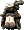

原野
盧亞斯森
米魯里斯森
斯歐米森
魔界村森
魯克西翁森
艾德安德周邊
卡雷瓦拉森
伊卡洛斯周邊
萊比亞周邊
【伊卡洛斯周邊】草原1｜草原2｜遺跡1｜遺跡2｜食蟲植物1｜食蟲植物2｜食蟲植物3｜食蟲植物4｜卵巢1｜卵巢2｜卵巢3｜卵巢4｜火山1｜火山2
※各怪物的編輯請由標題的鉛筆圖示進行。掉落道具的編輯也可以從掉落道具欄的
出現怪物
死亡小梅馬德
死亡梅馬德媽媽
死亡梅馬德爸爸
強大三角龍
凶猛三角龍
死亡三角龍
強力蛋殼三角龍
兇猛蛋殼三角龍
死亡蛋殼三角龍
強力飛天三角龍
兇猛飛天三角龍
死亡天使三角龍
死亡劍齒虎
死亡小劍齒虎
死亡冠軍斯米爾
死亡小梅馬德
| 死亡小梅馬德 | Lv | AC | MC | AAR | SAR | 掉落道具 |
| HP:40,248 | 70 | -35 | -15 | 40 | 10 |  彩券、碎片寶石 彩券、碎片寶石 |
| 經驗值 | 名聲值 | 金錢 | 攻擊屬性 | 防禦屬性 | ||
| 11400 | 4000 | 700 | 隨機 | 隨機 | ||
| STR | DEX | INT | WIS | CON | ||
| 53 | 33 | 73 | 3 | 103 |
備註
死亡梅馬德媽媽
| 死亡梅馬德媽媽 | Lv | AC | MC | AAR | SAR | 掉落道具 |
| HP:65,520 | 80 | -40 | -15 | 40 | 15 | 彩券、青銅奎雷克 |
| 經驗值 | 名聲值 | 金錢 | 攻擊屬性 | 防禦屬性 | ||
| 15360 | 6000 | 1000 | 隨機 | 隨機 | ||
| STR | DEX | INT | WIS | CON | ||
| 63 | 103 | 3 | 3 | 113 |
 惡魔之眼、
惡魔之眼、 噴射之燄、曼德拉草之歌、地獄死靈
噴射之燄、曼德拉草之歌、地獄死靈
死亡梅馬德爸爸
| 死亡梅馬德爸爸 | Lv | AC | MC | AAR | SAR | 掉落道具 |
| HP:112,320 | 90 | -40 | -15 | 40 | 10 | 彩券、光之賢者服、賢者背心 |
| 經驗值 | 名聲值 | 金錢 | 攻擊屬性 | 防禦屬性 | ||
| 25920 | 12000 | 1600 | 隨機 | 隨機 | ||
| STR | DEX | INT | WIS | CON | ||
| 73 | 43 | 13 | 3 | 143 |
備註
強大三角龍
| 強大三角龍 | Lv | AC | MC | AAR | SAR | 掉落道具 |
| HP:6,961 | 60 | -45 | -20 | 10 | -20 |  蝙蝠乾、 蝙蝠乾、 紫色比基尼裝、護手、 紫色比基尼裝、護手、 精神靈藥製法、曼德拉草水 精神靈藥製法、曼德拉草水 |
| 經驗值 | 名聲值 | 金錢 | 攻擊屬性 | 防禦屬性 | ||
| 4620 | 0 | 250 | 土 | 土 | ||
| STR | DEX | INT | WIS | CON | ||
| 23 | 53 | 63 | 3 | 83 |
備註
凶猛三角龍
| 凶猛三角龍 | Lv | AC | MC | AAR | SAR | 掉落道具 |
| HP:20,124 | 70 | -45 | -20 | 10 | -20 | 攻城鎚、 回憶之書(團體用) 回憶之書(團體用) |
| 經驗值 | 名聲值 | 金錢 | 攻擊屬性 | 防禦屬性 | ||
| 7980 | 0 | 350 | 土 | 土 | ||
| STR | DEX | INT | WIS | CON | ||
| 23 | 53 | 63 | 3 | 83 |
備註
死亡三角龍
| 死亡三角龍 | Lv | AC | MC | AAR | SAR | 掉落道具 |
| HP:65,520 | 80 | -60 | -20 | 10 | -20 | 彩券、 攻城梯、防禦行動 攻城梯、防禦行動 |
| 經驗值 | 名聲值 | 金錢 | 攻擊屬性 | 防禦屬性 | ||
| 21504 | 6000 | 1000 | 隨機 | 隨機 | ||
| STR | DEX | INT | WIS | CON | ||
| 63 | 53 | 63 | 3 | 83 |
備註
強力蛋殼三角龍
| 強力蛋殼三角龍 | Lv | AC | MC | AAR | SAR | 掉落道具 |
| HP:20,124 | 70 | -50 | -25 | 10 | -20 | [107]蛋殼三角龍變身捲軸、曼德拉草水、 寵物治療術、鳶形盾(新)、 寵物治療術、鳶形盾(新)、 蛋龍的蛋、 蛋龍的蛋、 三角龍的蛋、花蜜製法、 三角龍的蛋、花蜜製法、 琥珀、半長靴 琥珀、半長靴 |
| 經驗值 | 名聲值 | 金錢 | 攻擊屬性 | 防禦屬性 | ||
| 7,980 | 0 | 350 | 隨機 | 隨機 | ||
| STR | DEX | INT | WIS | CON | ||
| 23 | 53 | 3 | 63 | 83 |
對隱形無效
兇猛蛋殼三角龍
| 兇猛蛋殼三角龍 | Lv | AC | MC | AAR | SAR | 掉落道具 |
| HP:32,760 | 80 | -50 | -25 | 10 | -20 | 蛋龍的蛋、花蜜製法、 鑽頭指虎、攻城鎚 鑽頭指虎、攻城鎚 |
| 經驗值 | 名聲值 | 金錢 | 攻擊屬性 | 防禦屬性 | ||
| 10,752 | 0 | 500 | 隨機 | 隨機 | ||
| STR | DEX | INT | WIS | CON | ||
| 23 | 53 | 3 | 63 | 83 |
備註
死亡蛋殼三角龍
| 死亡蛋殼三角龍 | Lv | AC | MC | AAR | SAR | 掉落道具 |
| HP:112,320 | 90 | -65 | -25 | 10 | -20 | 彩券、回憶之書(團體)、光之鬥士服、 光之女鬥士服 光之女鬥士服 |
| 經驗值 | 名聲值 | 金錢 | 攻擊屬性 | 防禦屬性 | ||
| 35,562 | 12,000 | 1,600 | 隨機 | 隨機 | ||
| STR | DEX | INT | WIS | CON | ||
| 73 | 53 | 63 | 3 | 83 |
備註
強力飛天三角龍
| 強力飛天三角龍 | Lv | AC | MC | AAR | SAR | 掉落道具 |
| HP:32,760 | 80 | -60 | -40 | 10 | -20 | 魔法粉、回憶之書(團體)、三角龍的蛋、鑽頭指虎、半長靴 |
| 經驗值 | 名聲值 | 金錢 | 攻擊屬性 | 防禦屬性 | ||
| 10,752 | 0 | 500 | 風 | 風 | ||
| STR | DEX | INT | WIS | CON | ||
| 23 | 53 | 3 | 63 | 83 |
隱形無效 噴射之燄、惡魔之眼、地獄死靈、曼德拉草之歌
兇猛飛天三角龍
| 兇猛飛天三角龍 | Lv | AC | MC | AAR | SAR | 掉落道具 |
| HP:56,160 | 90 | -60 | -40 | 10 | -20 | 攻城鎚、回憶之書(團體) |
| 經驗值 | 名聲值 | 金錢 | 攻擊屬性 | 防禦屬性 | ||
| 18,144 | 0 | 800 | 風 | 風 | ||
| STR | DEX | INT | WIS | CON | ||
| 23 | 53 | 3 | 63 | 83 |
噴射之燄、惡魔之眼、地獄死靈、曼德拉草之歌
死亡天使三角龍
| 死亡天使三角龍 | Lv | AC | MC | AAR | SAR | 掉落道具 |
| HP:168,480 | 99 | -70 | -55 | 10 | -20 | 彩券、 光明女戰士服、 光明女戰士服、 光明戰士服 光明戰士服 |
| 經驗值 | 名聲值 | 金錢 | 攻擊屬性 | 防禦屬性 | ||
| 56,448 | 40,000 | 2,700 | 隨機 | 隨機 | ||
| STR | DEX | INT | WIS | CON | ||
| 83 | 53 | 3 | 63 | 83 |
噴射之燄、惡魔之眼、地獄死靈
死亡劍齒虎
| 死亡劍齒虎 | Lv | AC | MC | AAR | SAR | 掉落道具 |
| HP:65,520 | 80 | -25 | -5 | 60 | 30 | 彩券、碎片寶石 |
| 經驗值 | 名聲值 | 金錢 | 攻擊屬性 | 防禦屬性 | ||
| 18,432 | 6,000 | 1,000 | 隨機 | 隨機 | ||
| STR | DEX | INT | WIS | CON | ||
| 43 | 83 | 3 | 23 | 83 |
備註
死亡小劍齒虎
| 死亡小劍齒虎 | Lv | AC | MC | AAR | SAR | 掉落道具 |
| HP:112,320 | 90 | -30 | -10 | 60 | 30 | 彩券、史坦掌擊、艾斯奎普、 光之盜王服、 光之盜王服、 光之盜后服 |
| 經驗值 | 名聲值 | 金錢 | 攻擊屬性 | 防禦屬性 | ||
| 31,104 | 12,000 | 1,600 | 隨機 | 隨機 | ||
| STR | DEX | INT | WIS | CON | ||
| 63 | 93 | 3 | 23 | 83 |
備註
死亡冠軍斯米爾
| 死亡冠軍斯米爾 | Lv | AC | MC | AAR | SAR | 掉落道具 |
| HP:168,480 | 99 | -35 | -10 | 60 | 40 | 黑玫瑰、光之魔導士服、 光之女魔導士服 光之女魔導士服 |
| 經驗值 | 名聲值 | 金錢 | 攻擊屬性 | 防禦屬性 | ||
| 48,384 | 40,000 | 2,700 | 隨機 | 隨機 | ||
| STR | DEX | INT | WIS | CON | ||
| 73 | 113 | 23 | 3 | 83 |
備註
 蒂拉諾 蒂拉諾 | Lv | AC | MC | AAR | SAR | 掉落道具 |
| HP:339,408 | 99 | 10 | 20 | 40 | 30 |  刺茅之冑、 刺茅之冑、 龍鱗之冑、寵物復活術、鑑定術、[94]蒂拉諾變身捲軸、 龍鱗之冑、寵物復活術、鑑定術、[94]蒂拉諾變身捲軸、 上級靈魂寶石、 上級靈魂寶石、 靈魂石[戰熊] 靈魂石[戰熊] |
| 經驗值 | 名聲值 | 金錢 | 攻擊屬性 | 防禦屬性 | ||
| 121,200 | 40,000 | 8,000 | 隨機 | 隨機 | ||
| STR | DEX | INT | WIS | CON | ||
| 91 | 41 | 41 | 41 | 91 |
蒂拉諾吐息 隱形無效，守護目標